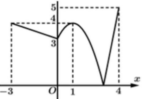
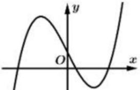
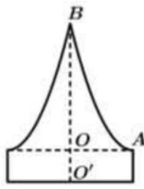

ĐỀ THI TOÁN - ĐỀ SỐ 61 HOT
Phần I: Trắc Nghiệm Nhiều Lựa Chọn
Tóm tắt kiến thức: Hình chiếu lên trục tọa độ
Hình chiếu của điểm \( M(x_0; y_0; z_0) \) lên trục \( Ox \) là \( N(x_0; 0; 0) \), thỏa mãn \( \overrightarrow{MN} \perp \vec{i} \).
Câu 1:
Trong không gian với hệ trục tọa độ \( Oxyz \), cho điểm \( M(1; 2; 3) \). Hình chiếu của \( M \) lên trục \( Ox \) là điểm
Chọn đáp án:
Tóm tắt kiến thức: Nguyên hàm
Nguyên hàm của \( x^n \) là \( \frac{x^{n+1}}{n+1} + C \), với \( n \neq -1 \).
Câu 2:
Trên khoảng \( (0; +\infty) \), họ nguyên hàm của hàm số \( f(x) = x^{-\frac{4}{5}} \) là
Chọn đáp án:
Tóm tắt kiến thức: Điểm cực trị
Điểm cực trị của hàm số là các điểm mà tại đó hàm đạt cực đại hoặc cực tiểu, xác định qua đồ thị hoặc đạo hàm.
Câu 3:
Cho hàm số \( y = f(x) \) liên tục trên \( \mathbb{R} \) và có đồ thị như hình vẽ bên.

Trên đoạn \( [-3; 4] \), hàm số đã cho có bao nhiêu điểm cực trị?
Chọn đáp án:
Tóm tắt kiến thức: Cấp số cộng
Trong cấp số cộng, \( u_n = u_1 + (n-1)d \), công sai \( d = \frac{u_{n+1} - u_n}{1} \).
Câu 4:
Cho cấp số cộng \( (u_n) \) thỏa mãn \( u_4 - u_1 = 6 \). Công sai của \( (u_n) \) bằng
Chọn đáp án:
Tóm tắt kiến thức: Hình học không gian
Giao tuyến của hai mặt phẳng vuông góc với mặt phẳng đáy là đường thẳng vuông góc với mặt phẳng đáy.
Câu 5:
Cho hình chóp \( S.ABCD \) có đáy \( ABCD \) là hình bình hành tâm \( O \). Hai mặt phẳng \( (SAC) \), \( (SBD) \) cùng vuông góc với mặt phẳng đáy. Khẳng định nào sau đây đúng?
Chọn đáp án:
Tóm tắt kiến thức: Giá trị nhỏ nhất của hàm số
Hàm số nghịch biến trên \( \mathbb{R} \) đạt giá trị nhỏ nhất tại điểm lớn nhất của đoạn.
Câu 6:
Giá trị nhỏ nhất của hàm số \( y = 2^{1-x} \) trên đoạn \( [0; 1] \) bằng
Chọn đáp án:
Tóm tắt kiến thức: Bất phương trình logarit
Bất phương trình \( \log_b (u) \geq 0 \) có nghiệm \( u \geq 1 \), với điều kiện \( u > 0 \).
Câu 7:
Tập nghiệm của bất phương trình \( \log_{\frac{1}{3}}(x + 1) \geq 0 \) là
Chọn đáp án:
Tóm tắt kiến thức: Thể tích khối tròn xoay
Thể tích khối tròn xoay quanh trục hoành: \( V = \pi \int_a^b [f(x)]^2 \, dx \).
Câu 8:
Cho hình phẳng \( (H) \) giới hạn bởi các đường \( y = 2x - x^2 \), \( y = 0 \). Quay \( (H) \) quanh trục hoành tạo thành khối tròn xoay có thể tích là
Chọn đáp án:
Tóm tắt kiến thức: Phương trình mặt cầu
Mặt cầu \( x^2 + y^2 + z^2 + 2ax + 2by + 2cz + d = 0 \) có tâm \( (-a; -b; -c) \).
Câu 9:
Trong không gian \( Oxyz \), cho mặt cầu \( (S): x^2 + y^2 + z^2 - 2x + 2y - 4z - 3 = 0 \). Tâm của mặt cầu \( (S) \) có tọa độ là
Chọn đáp án:
Tóm tắt kiến thức: Hàm số bậc ba
Hàm số \( y = ax^3 + bx^2 + cx + d \) với \( a > 0 \) có đồ thị hướng lên; giao điểm với trục \( Oy \) tại \( (0; d) \).
Câu 10:
Cho hàm số bậc ba \( y = ax^3 - 2x + d (a, d \in \mathbb{R}) \) có đồ thị như hình vẽ bên.

Khẳng định nào sau đây đúng?
Chọn đáp án:
Tóm tắt kiến thức: Khoảng tứ phân vị
Khoảng tứ phân vị \( \Delta Q = Q_3 - Q_1 \), với \( Q_1, Q_3 \) được tính từ bảng số liệu ghép nhóm.
Câu 11:
Chiều cao của các bạn học sinh nữ lớp 12B được ghi lại ở bảng sau:
| Chiều cao (cm) | \([155; 160)\) | \([160; 165)\) | \([165; 170)\) | \([170; 175)\) |
|---|---|---|---|---|
| Số học sinh | 2 | 5 | 8 | 7 |
Khoảng tứ phân vị của mẫu số liệu ghép nhóm trên gần với giá trị nào nhất sau đây?
Chọn đáp án:
Tóm tắt kiến thức: Vector trong hình lăng trụ
Độ dài vector được tính bằng căn bậc hai của tổng bình phương các tọa độ.
Câu 12:
Cho hình lăng trụ tam giác đều \( ABC.A'B'C' \) có cạnh \( AB = 3 \), \( AA' = 4 \). Độ dài của vector \( \vec{u} = \overrightarrow{A'B'} + \overrightarrow{C'A} \) bằng
Chọn đáp án:
Phần II: Trắc Nghiệm Đúng/Sai
Tóm tắt kiến thức: Nguyên hàm và tích phân
Hàm số \( f(x) \) là nguyên hàm của \( f'(x) \). Nguyên hàm của \( f(x) \) được tính bằng tích phân.
Câu 13:
Cho hàm số \( y = f(x) \) có đạo hàm là \( f'(x) = 8x^3 + \sin x, \forall x \in \mathbb{R} \) và thỏa mãn \( f(0) = 3 \). Xét các phát biểu sau:
Chọn đáp án cho từng phát biểu:
a)
b)
c)
d)
Tóm tắt kiến thức: Đạo hàm và bài toán chuyển động
Độ cao của vật chuyển động theo phương ngang được mô hình hóa bằng hàm bậc hai, cực trị xảy ra khi đạo hàm bằng 0.
Câu 14:
Một hòn đá được ném từ một cây cầu với quỹ đạo ban đầu là \( 25^\circ \) so với phương nằm ngang. Vào thời điểm nó di chuyển \( x \, \text{m} \) theo phương ngang, chiều cao của hòn đá so với mặt nước dưới cầu được cho bởi \( h(x) = ax^2 + bx + c \, \text{m} \) với \( a, b, c \in \mathbb{R} \). Hòn đá được ném từ độ cao 3 mét so với mặt nước và đạt độ cao cực đại khi \( x = 5 \). Xét các phát biểu sau:
Chọn đáp án cho từng phát biểu:
a)
b)
c)
d)
Tóm tắt kiến thức: Xác suất có điều kiện
Xác suất toàn phần: \( P(A) = P(B)P(A|B) + P(\bar{B})P(A|\bar{B}) \). Xác suất có điều kiện: \( P(B|A) = \frac{P(B)P(A|B)}{P(A)} \).
Câu 15:
Tỉ lệ học sinh tiêm vắc xin phòng bệnh Thủy Đậu trong một trường \( M \) là 70%. Trong số những học sinh đã tiêm phòng, tỉ lệ mắc bệnh Thủy Đậu là 4%, còn trong số học sinh chưa tiêm, tỉ lệ mắc bệnh là 20%. Gặp ngẫu nhiên một học sinh ở trường đó. Biết học sinh đó bị bệnh Thủy Đậu. Gọi \( B \) là biến cố: "Gặp học sinh đã tiêm vắc xin phòng bệnh Thủy Đậu". Xét các phát biểu sau:
Chọn đáp án cho từng phát biểu:
a)
b)
c)
d)
Tóm tắt kiến thức: Hình học không gian và chuyển động
Phương trình đường thẳng và hình chiếu được xác định từ vector chỉ phương. Khoảng cách tính bằng tích vô hướng.
Câu 16:
Hình vẽ minh họa đường bay của một chiếc trực thăng \( H \) cất cánh từ một sân bay. Xét hệ trục tọa độ \( Oxyz \) có gốc tọa độ \( O \) là chân tháp điều khiển của sân bay; trục \( Ox \) là hướng đông, trục \( Oy \) là hướng bắc và trục \( Oz \) là trục thẳng đứng, đơn vị trên mỗi trục là kilômét. Trực thăng cất cánh từ điểm \( G \). Vector \( \vec{r} \) chỉ vị trí của trực thăng tại thời điểm \( t \) phút sau khi cất cánh (\( t \geq 0 \)) có tọa độ là: \( \vec{r} = (1 + t; 0,5 + 2t; 2t) \). Xét các phát biểu sau:
Chọn đáp án cho từng phát biểu:
a)
b)
c)
d)
Phần III: Trắc Nghiệm Trả Lời Ngắn
Tóm tắt kiến thức: Khoảng cách trong không gian
Khoảng cách giữa hai đường thẳng chéo nhau bằng khoảng cách từ một điểm trên đường này đến mặt phẳng chứa đường kia.
Câu 17:
Cho hình chóp \( S.ABC \) có đáy \( ABC \) là tam giác vuông tại \( C \) với \( AC = 6 \), \( BC = 12 \). Cạnh bên \( SC = 3 \) và \( SC \perp (ABC) \). Gọi \( M \) là trung điểm cạnh \( AC \). Khoảng cách giữa hai đường thẳng \( SM \) và \( AB \) bằng bao nhiêu?
Nhập đáp án:
Tóm tắt kiến thức: Định lý Euler
Định lý Euler: \( V - E + F = 2 \). Tổng số cạnh chung được tính dựa trên số cạnh của hình đa giác.
Câu 18:
Để làm một quả bóng như hình bên,

người ta dùng một số mảnh da hình lục giác đều và hình ngũ giác đều có các cạnh chung, rồi khâu các cạnh chung của từng hai mảnh một sao cho cứ mỗi hình ngũ giác đều có cạnh chung với năm hình lục giác đều. Hỏi cần dùng bao nhiêu mảnh da để làm một quả bóng?
Nhập đáp án:
Tóm tắt kiến thức: Thể tích khối tròn xoay
Thể tích khối tròn xoay: \( V = \pi \int_a^b [f(y)]^2 \, dy \). Parabol được xác định qua các điểm cho trước.
Câu 19:
Chuẩn bị cho đêm hội diễn văn nghệ chào đón năm mới, bạn An đã làm một chiếc mũ "cách điệu" cho ông già Noël có dạng một khối tròn xoay. Mặt cắt qua trục của chiếc mũ như hình bên dưới.

Biết rằng \( OO' = 5 \, \text{cm} \), \( OA = 10 \, \text{cm} \), \( OB = 20 \, \text{cm} \), đường cong \( AB \) là một phần của parabol có đỉnh là điểm \( A \). Thể tích của chiếc mũ bằng bao nhiêu cm³? (kết quả làm tròn đến hàng đơn vị).
Nhập đáp án:
Tóm tắt kiến thức: Mặt cầu qua các điểm
Tâm mặt cầu đi qua các điểm cách đều tâm, xác định bằng giải hệ phương trình.
Câu 20:
Trong không gian \( Oxyz \) (đơn vị đo là km), bốn chiếc máy bay ở bốn hướng khác nhau khi vừa bay vào vùng phủ sóng của một chiếc radar thì trên radar cùng một lúc báo tín hiệu phát hiện mục tiêu. Tại thời điểm radar phát hiện mục tiêu thì 4 chiếc máy bay ở vị trí có tọa độ lần lượt là \( A(30; 25; 33) \), \( B(14; 1; 49) \), \( C(40; -29; 1) \), \( D(0; 31; 41) \). Hỏi bán kính vùng phủ sóng của radar là bao nhiêu km?
Nhập đáp án:
Tóm tắt kiến thức: Xác suất chẩn đoán
Xác suất chẩn đoán đúng: \( P(B) = P(A)P(B|A) + P(\bar{A})P(B|\bar{A}) \).
Câu 21:
Tại một phòng khám chuyên khoa, tỉ lệ người đến khám thực sự có bệnh là 75%. Với những người có bệnh, chẩn đoán có bệnh là đúng 9 trên 10 trường hợp. Với những người không có bệnh, chẩn đoán không có bệnh là đúng 5 trên 10 trường hợp. Hỏi xác suất chẩn đoán đúng là bao nhiêu phần trăm? Biết rằng chẩn đoán đúng là khi người bị bệnh được chẩn đoán có bệnh hoặc người không bị bệnh được chẩn đoán không bị bệnh.
Nhập đáp án:
Tóm tắt kiến thức: Độ dài đoạn thẳng trên parabol
Độ dài đoạn thẳng song song trục \( Oy \) được tính dựa trên phương trình parabol và điều kiện đối xứng.
Câu 22:
Một thành phố nằm trên một con sông chảy qua hẻm núi. Hẻm có chiều ngang 80 m, một bên. Con đường \( XY \) xuyên qua hẻm núi được mô hình hóa bằng phương trình: \( y = \frac{x^3}{25600} - \frac{3x}{16} + 35 \). Hai cột dọc \( MN \) và \( PQ \) (song song với trục \( Oy \)) là đoạn nối giữa khung của parabol và đường \( XY \). Tính tổng độ dài đoạn \( MN \) và \( PQ \) biết rằng \( N \) và \( Q \) là hai điểm đối xứng qua \( Oy \); \( MN \) là đoạn có độ dài lớn nhất (làm tròn kết quả đến hàng phần chục).
Nhập đáp án: